NO SMALL TALK
A curious gathering for curious people.
Skip the weather.
Skip "What do you do?"
Instead, spend a Sunday afternoon meeting strangers through playful prompts, drawing challenges, and unexpected conversations.
No networking.
No awkward icebreakers.
No pressure to be interesting.
Just a gathering designed to make talking to new people feel surprisingly easy.
Join the funHow It Works
you don't need to know anyone when you arrive.
We'll start by getting everyone moving and talking, then gradually make our way into deeper, stranger, more playful conversations.
Each round introduces a different prompt.
Some you'll answer with a story.
Some you'll answer with a drawing.
Some you'll answer with three words or less.
No artistic ability required.
Every activity is designed to make conversations happen naturally thanks to Inner Playground.
Who It's For
- People new to Lisbon
- People looking to make genuine connections
- Introverts who hate networking
- Extroverts looking for something different
- Anyone tired of being asked, "Where are you from?"
WHAT'S INCLUDED
your ticket gets you:
a little juice box to get your creative juices flowing
a few rounds of inner playground- a playful conversation card game designed to actually get people talking
all drawing & writing materials
questions you probably haven't been asked before
two hours outside with a bunch of curious strangers
and, hopefully, a few connections with people you wouldn't have met otherwise.
Event Details
Sunday, September 13th
3:00 PM – 5:00 PM
📍 Campo dos Mártires da Pátria
Price: 9 Euro
Limited capacity. RSVP required.
Each No small talk 🔴 has sold out. Get your tickets early.
RSVP hereFAQ
Do I need to be outgoing?
Not at all. The activities make meeting people feel natural.
What if I can't draw?
Perfect. This isn't an art class.
Is this speed dating or networking?
No. and No.....(Thank God!)
Can I come by myself?
Absolutely. Most people do.
Is there an age limit?
This event is for adults.
photos from our last no small talk (taken by nash💗) ↓
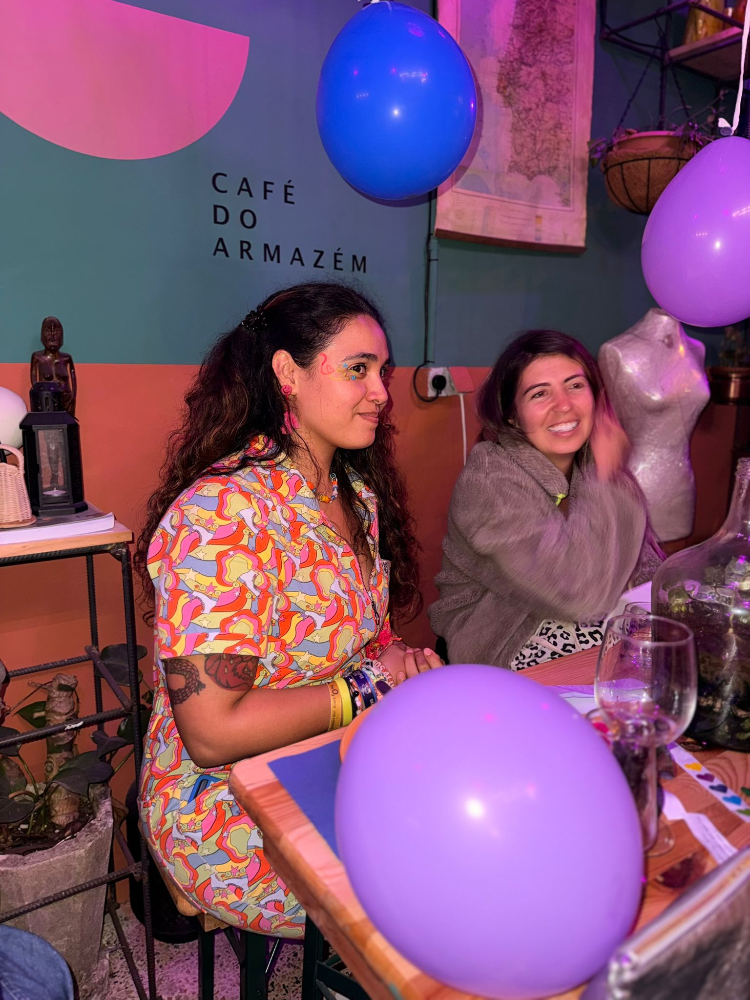
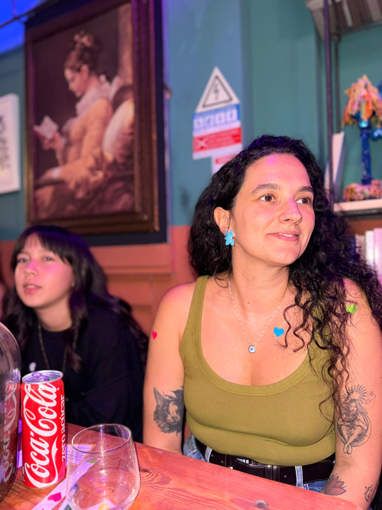
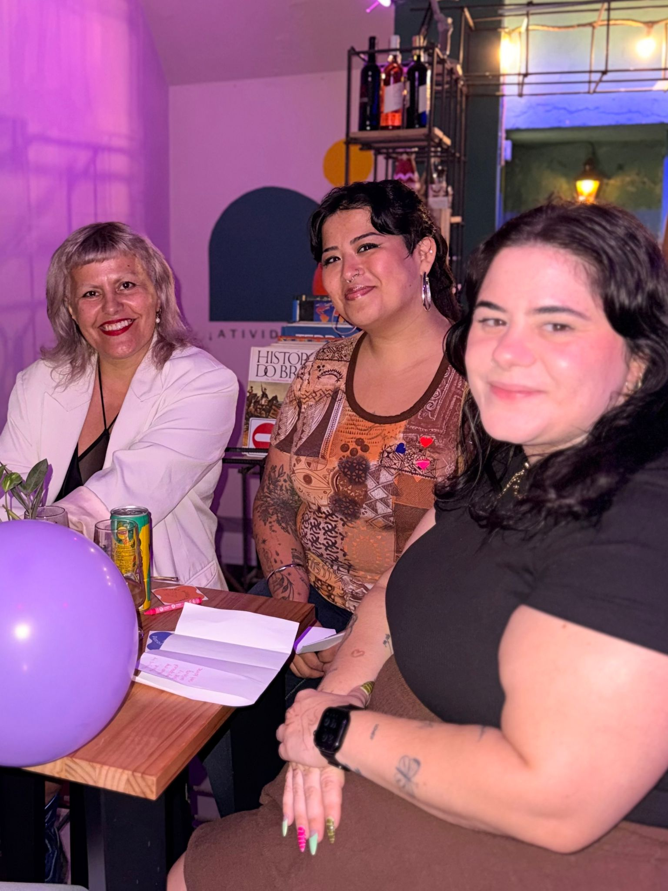
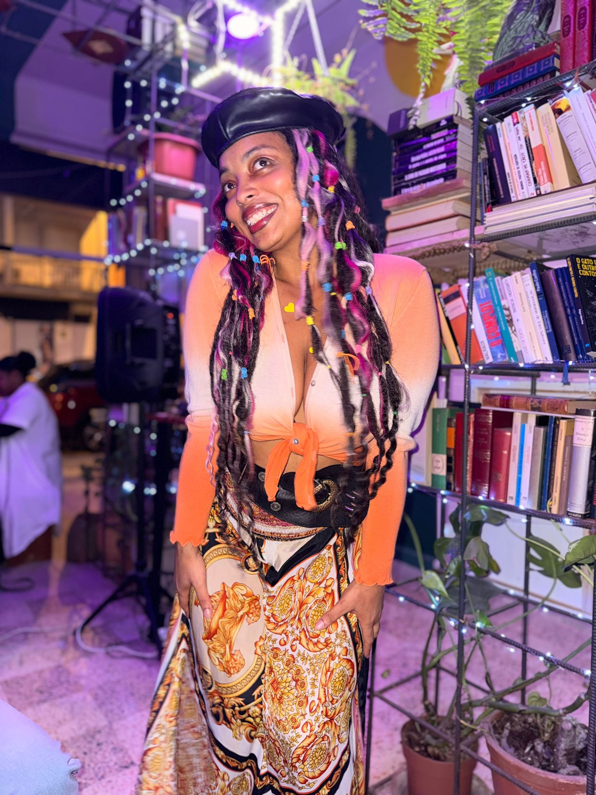
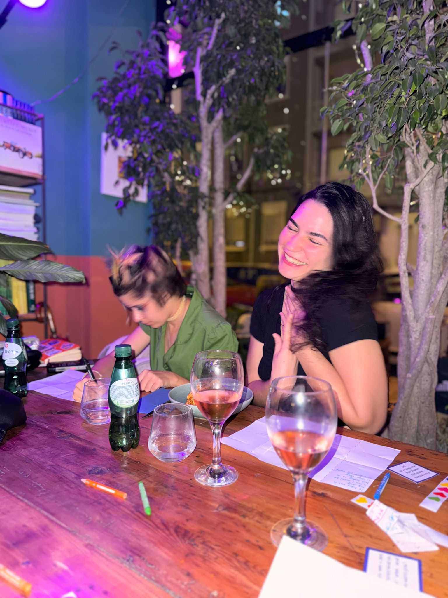
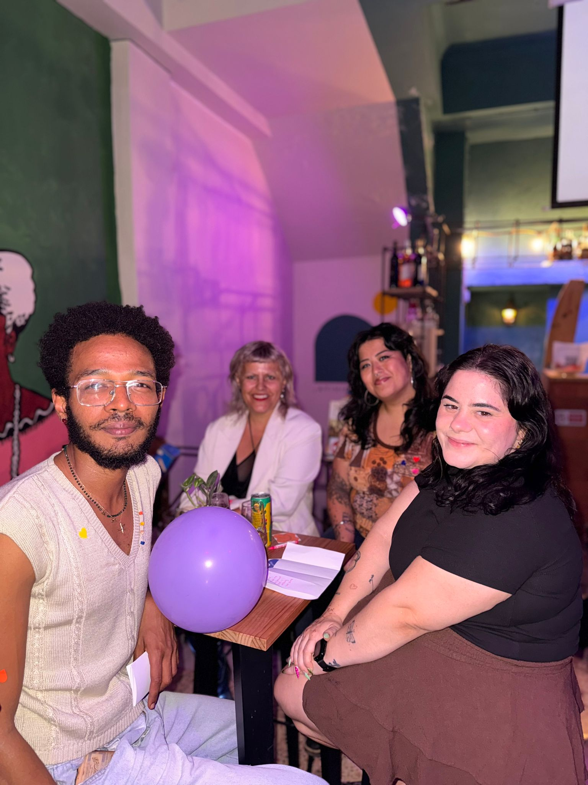
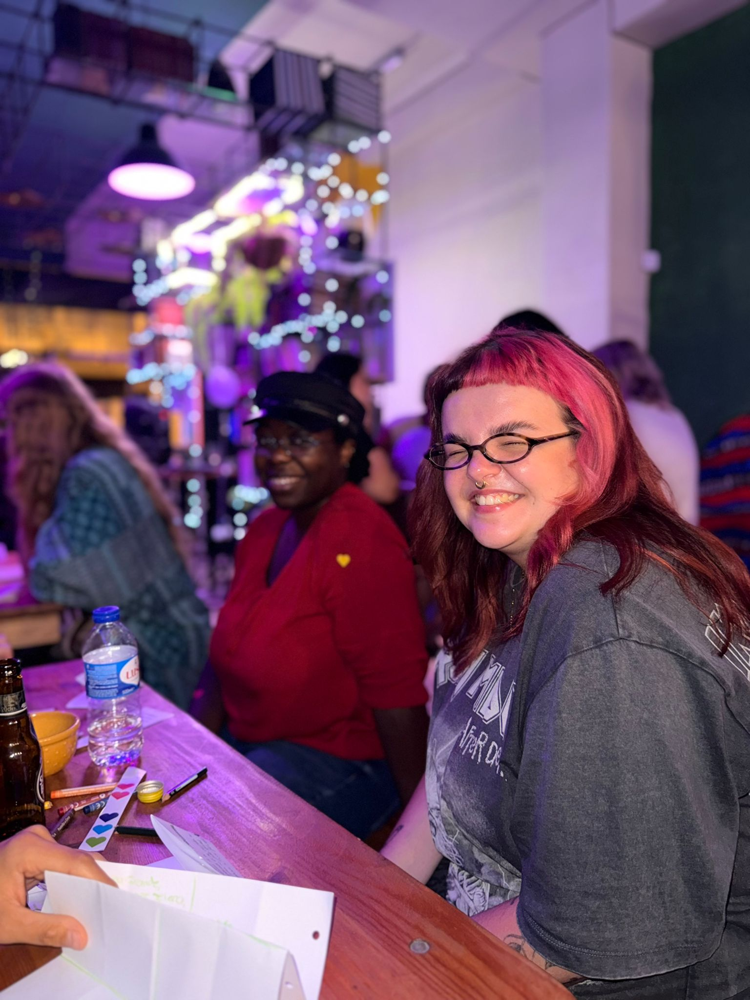
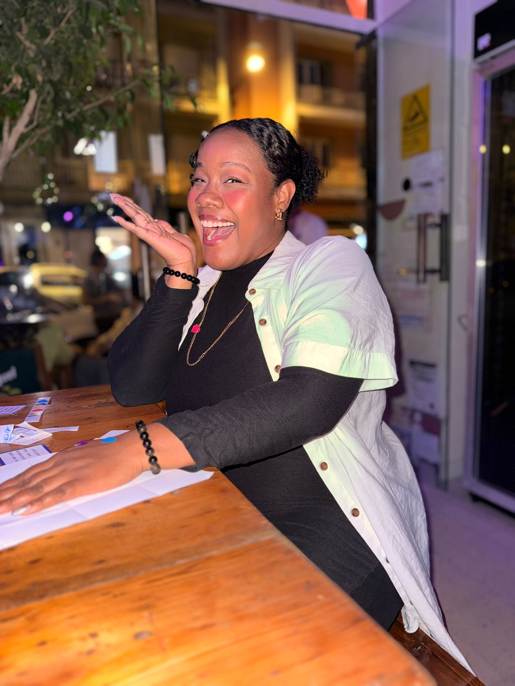
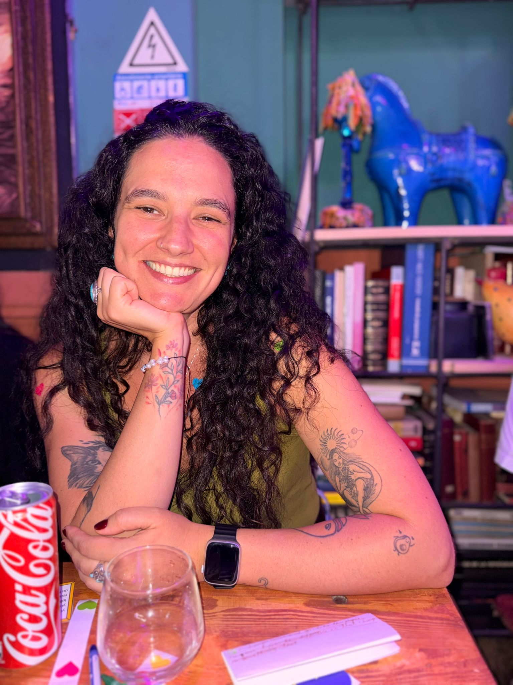
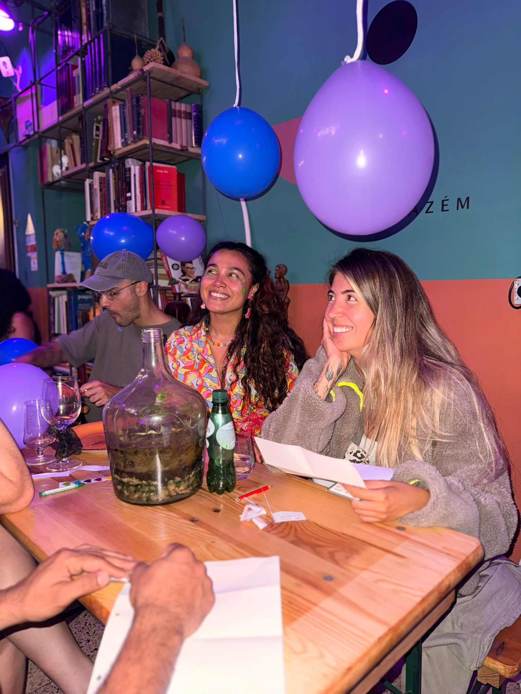
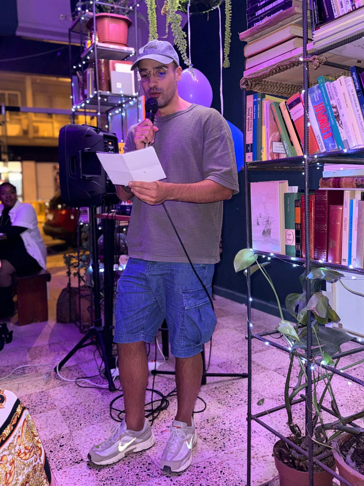
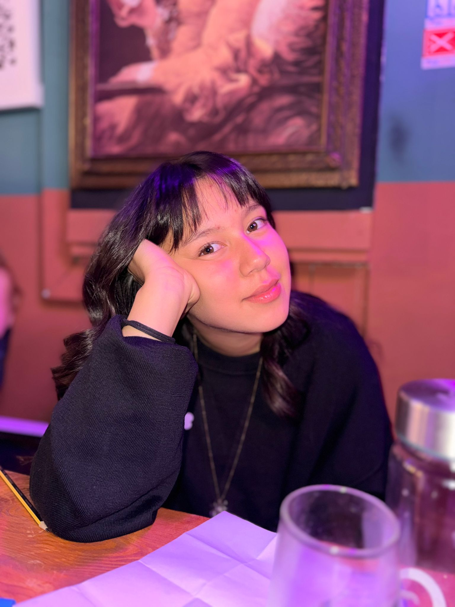
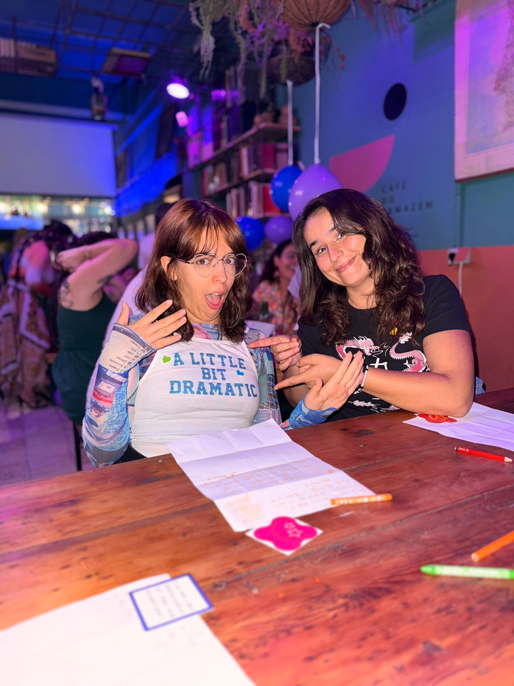
One More Thing...
This isn't a networking event.
It isn't speed dating.
It isn't therapy.
It's simply a chance to spend two hours having the kinds of conversations you usually wish happened more often.
come play →